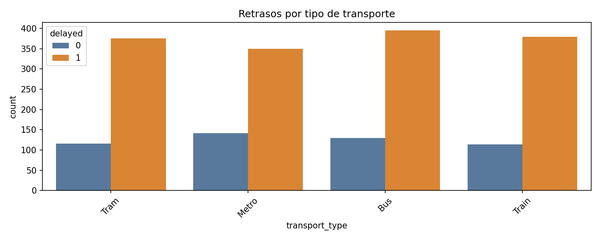
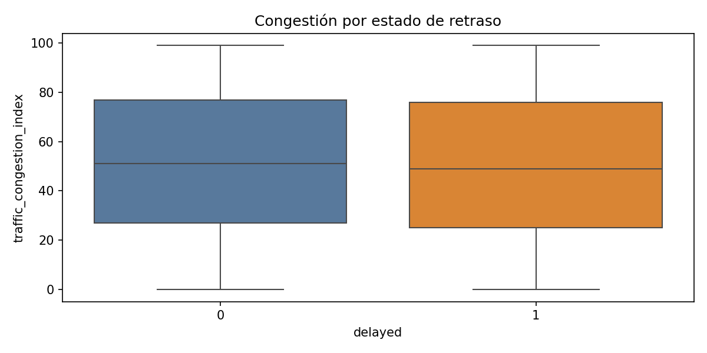
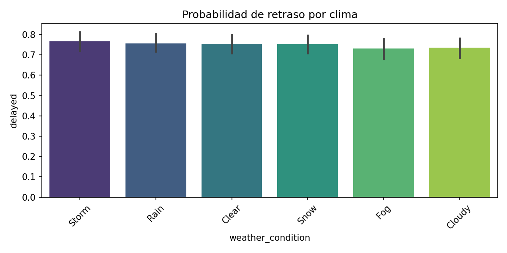

Este informe resume la distribución inicial, los patrones por categoría y la relación de las variables con la variable objetivo delayed.
Filas: 2000
Columnas: 32
Proporción de retrasos: 74.95%
| mean | std | min | max | |
|---|---|---|---|---|
| actual_departure_delay_min | 8.68800 | 6.268118 | -2.0 | 19.0 |
| actual_arrival_delay_min | 13.31800 | 9.289727 | -3.0 | 29.0 |
| temperature_C | 15.12135 | 11.479424 | -5.0 | 35.0 |
| humidity_percent | 64.71400 | 20.334747 | 30.0 | 99.0 |
| wind_speed_kmh | 29.30050 | 17.264015 | 0.0 | 59.0 |
| precipitation_mm | 9.86070 | 5.781373 | 0.0 | 20.0 |
| event_attendance_est | 6420.25000 | 15198.306129 | 0.0 | 50000.0 |
| traffic_congestion_index | 50.24400 | 29.225751 | 0.0 | 99.0 |


